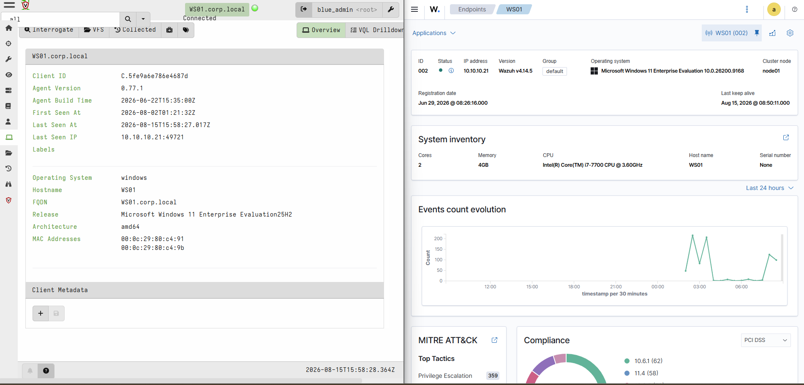
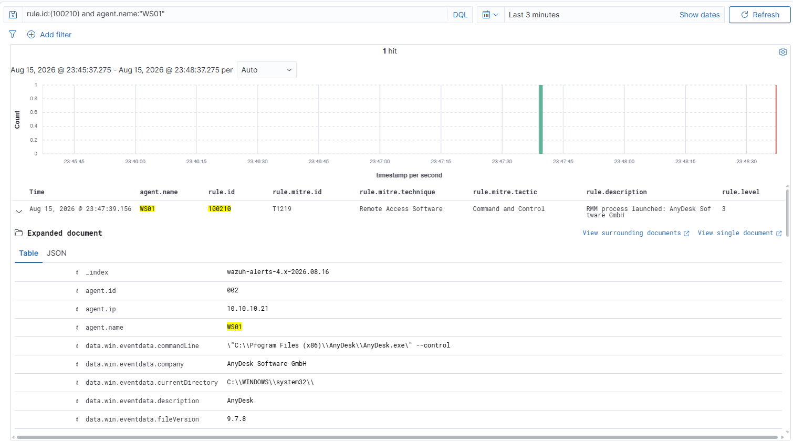
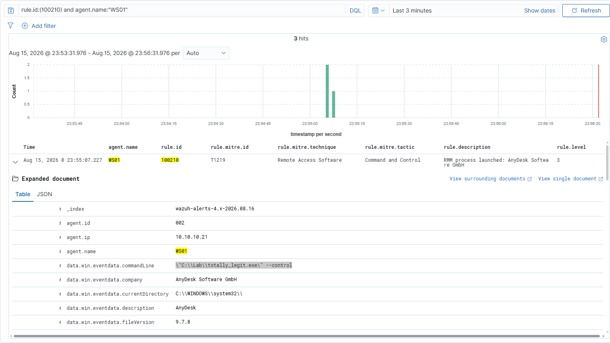
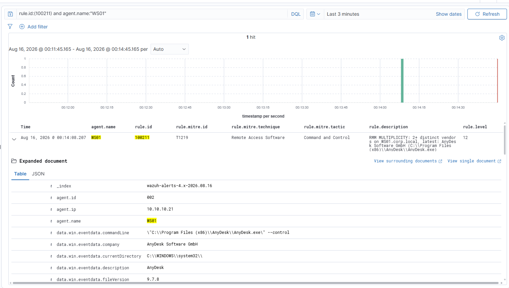
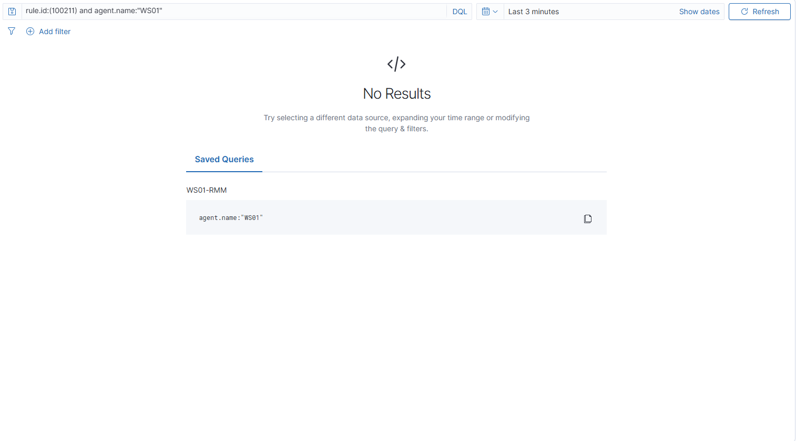
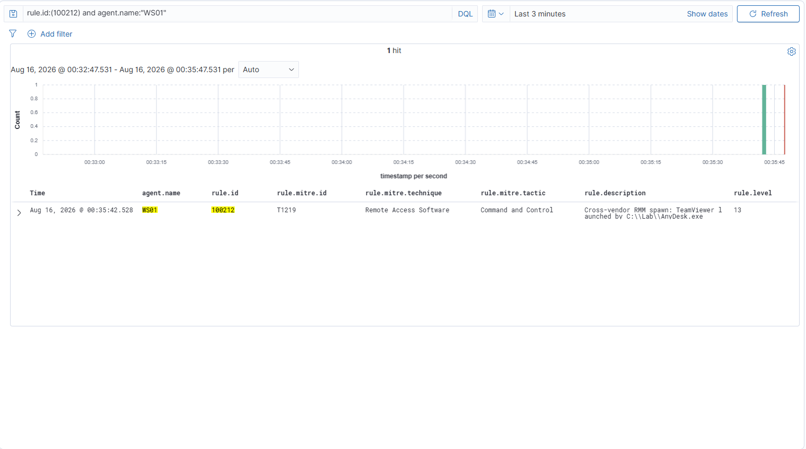
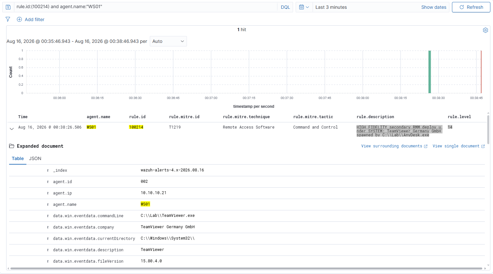
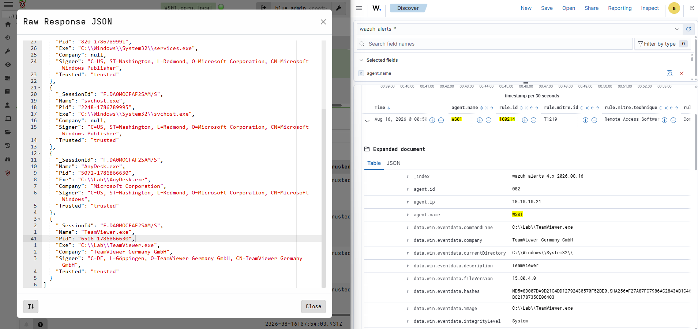

One RMM Is IT. Two Is An Incident.
Attackers have largely stopped bringing their own malware. Instead they install the same remote-access software the IT department already uses, because it is real software, signed by the vendor, and it looks exactly like someone doing support. There is nothing to scan for.
Which is a problem, because one of these tools running on a machine is completely normal. Every managed service provider on earth has one. So the useful question is not whether a remote tool is there. It is whether a second one showed up, and whether the first one put it there.
This is how I built that detection in a home lab, what it catches, and where it falls apart.
Confirm AnyDesk and TeamViewer binary path and running processes
[WS01] C:\WINDOWS\system32 > Get-Process *anydesk*
Handles NPM(K) PM(K) WS(K) CPU(s) Id SI ProcessName
------- ------ ----- ----- ------ -- -- -----------
444 26 45000 62496 3.61 7188 1 AnyDesk
477 30 44068 69432 1.13 9604 0 AnyDesk
[WS01] C:\WINDOWS\system32 > Get-Process *team*
Handles NPM(K) PM(K) WS(K) CPU(s) Id SI ProcessName
------- ------ ----- ----- ------ -- -- -----------
487 91 19380 26176 9.75 3628 0 TeamViewer_Service
[WS01] C:\WINDOWS\system32 > (Get-ChildItem 'C:\Program Files','C:\Program Files (x86)' -Recurse -Filter TeamViewer.exe -ErrorAction SilentlyContinue | Select-Object -First 1).FullName
C:\Program Files\TeamViewer\TeamViewer.exe
[WS01] C:\WINDOWS\system32 > (Get-ChildItem 'C:\Program Files','C:\Program Files (x86)' -Recurse -Filter AnyDesk.exe -ErrorAction SilentlyContinue | Select-Object -First 1).FullName
C:\Program Files (x86)\AnyDesk\AnyDesk.exe
Confirm WS01 is active in Wazuh and Velociraptor dashboards

Wazuh dashboard columns
rule.level rule.description agent.name data.win.eventdata.company data.win.eventdata.parentImage data.win.eventdata.image data.win.eventdata.integrityLevel data.win.eventdata.processGuid
Wazuh detection ruleset
<!--
rmm_detection.xml - RMM abuse detection - 100210 identify | 100211 multiplicity (correlational) | 100212-214 causal (RMM-A spawns RMM-B)
-->
<group name="sysmon,rmm,">
<rule id="100210" level="3">
<if_group>sysmon_event1</if_group>
<field name="win.eventdata.company">AnyDesk Software GmbH|TeamViewer|Atera Networks|Splashtop|MeshCentral|ConnectWise|Level|ScreenConnect|RealVNC|UltraVNC|Ninja|Action1|Syncro|Pulseway|Tiflux</field>
<description>RMM process launched: $(win.eventdata.company)</description>
<mitre><id>T1219</id></mitre>
<group>rmm_detected,</group>
</rule>
<rule id="100211" level="12" frequency="2" timeframe="600">
<if_matched_sid>100210</if_matched_sid>
<same_field>win.system.computer</same_field>
<different_field>win.eventdata.company</different_field>
<description>RMM MULTIPLICITY: 2+ distinct vendors on $(win.system.computer), latest: $(win.eventdata.company) ($(win.eventdata.image))</description>
<mitre><id>T1219</id></mitre>
<group>rmm_detected,rmm_multiplicity,</group>
</rule>
<!-- 100212: a different-vendor RMM process spawned TeamViewer (causal, cross-vendor). -->
<rule id="100212" level="13">
<if_sid>100210</if_sid>
<field name="win.eventdata.company">TeamViewer</field>
<field name="win.eventdata.parentImage" type="pcre2">(?i)(anydesk|screenconnect|connectwise|atera|splashtop|meshagent)</field>
<description>Cross-vendor RMM spawn: TeamViewer launched by $(win.eventdata.parentImage)</description>
<mitre><id>T1219</id></mitre>
<group>rmm_detected,rmm_secondary_deploy,</group>
</rule>
<!-- 100213: a different-vendor RMM process spawned AnyDesk (causal, cross-vendor). -->
<rule id="100213" level="13">
<if_sid>100210</if_sid>
<field name="win.eventdata.company">AnyDesk</field>
<field name="win.eventdata.parentImage" type="pcre2">(?i)(teamviewer|screenconnect|connectwise|atera|splashtop|meshagent)</field>
<description>Cross-vendor RMM spawn: AnyDesk launched by $(win.eventdata.parentImage)</description>
<mitre><id>T1219</id></mitre>
<group>rmm_detected,rmm_secondary_deploy,</group>
</rule>
<!-- 100214: escalate when the spawned RMM runs as SYSTEM. -->
<rule id="100214" level="14">
<if_sid>100212,100213</if_sid>
<field name="win.eventdata.integrityLevel">System</field>
<description>HIGH FIDELITY secondary RMM deploy under SYSTEM: $(win.eventdata.company) spawned by $(win.eventdata.parentImage)</description>
<mitre><id>T1219</id></mitre>
<group>rmm_detected,rmm_secondary_deploy,</group>
</rule>
</group>
1Questions to answer
1. Rule 100210 (identify, level 3)
You copy AnyDesk.exe to totally_legit.exe and launch the copy. Does the rule fire?
2. Rule 100211 (multiplicity, level 12)
You launch TeamViewer once, and nothing else. It starts three processes: TeamViewer.exe, tv_w32.exe, tv_x64.exe. Does the rule fire?
3. Rule 100211 again
You launch AnyDesk, then TeamViewer eleven minutes later. Does it fire?
4. Rule 100212 (causal, level 13)
A genuine AnyDesk binary, renamed to svc-helper.exe, spawns TeamViewer. Does it fire?
5. Rule 100214 (SYSTEM, level 14)
You run the causal test interactively from your own shell, instead of as a scheduled task set to run as SYSTEM. Does it fire?
6. Rule precedence
You stage the decoy in C:\Windows\Temp instead of C:\Lab and launch it with Start-Process. Built-in Wazuh rule 92066 fires at level 4 on executables in that folder launched by PowerShell. Rule 100210 is level 3. What appears in the alert stream?
7. Operation BlueDash
A single PowerShell command downloads and launches Level and ConnectWise ScreenConnect in parallel. Which of these rules fire, and which stay silent?
2Metadata
# AnyDesk
# Pull full version information from the PE header of AnyDesk.exe
[WS01] C:\WINDOWS\system32 > (Get-Item 'C:\Program Files (x86)\AnyDesk\AnyDesk.exe').VersionInfo | Format-List *
FileVersionRaw : 9.7.8.0
ProductVersionRaw : 0.0.0.0
Comments :
CompanyName : AnyDesk Software GmbH
FileBuildPart : 8
FileDescription : AnyDesk
FileMajorPart : 9
FileMinorPart : 7
FileName : C:\Program Files (x86)\AnyDesk\AnyDesk.exe
FilePrivatePart : 0
FileVersion : 9.7.8
InternalName :
IsDebug : False
IsPatched : False
IsPrivateBuild : False
IsPreRelease : False
IsSpecialBuild : False
Language : English (United States)
LegalCopyright : (C) 2026 AnyDesk Software GmbH
LegalTrademarks :
OriginalFilename :
PrivateBuild :
ProductBuildPart : 0
ProductMajorPart : 0
ProductMinorPart : 0
ProductName : AnyDesk
ProductPrivatePart : 0
ProductVersion : 9.7
SpecialBuild :
# Check whether the binary is digitally signed and if the signature is valid
[WS01] C:\WINDOWS\system32 > Get-AuthenticodeSignature 'C:\Program Files (x86)\AnyDesk\AnyDesk.exe'
Directory: C:\Program Files (x86)\AnyDesk
SignerCertificate Status Path
----------------- ------ ----
D056FB932C5A4821C328214E4F4988436650583A Valid AnyDesk.exe
# Extract just the Subject field from the signing certificate (shows the real company that signed it)
[WS01] C:\WINDOWS\system32 > (Get-AuthenticodeSignature 'C:\Program Files (x86)\AnyDesk\AnyDesk.exe').SignerCertificate.Subject
CN=AnyDesk Software GmbH, O=AnyDesk Software GmbH, L=Stuttgart, S=Baden-Württemberg, C=DE
# /
# / /
# / / /
# / / / /
# / / / / /
# / / / / / /
# / / / / / / /
# / / / / / / / /
# / / / / / / / / / https://purplepyram1d.com
# TeamViewer
# Pull full version information from the PE header of TeamViewer.exe
[WS01] C:\WINDOWS\system32 > (Get-Item 'C:\Program Files\TeamViewer\TeamViewer.exe').VersionInfo | Format-List *
FileVersionRaw : 15.80.4.0
ProductVersionRaw : 15.80.0.0
Comments :
CompanyName : TeamViewer Germany GmbH
FileBuildPart : 4
FileDescription : TeamViewer
FileMajorPart : 15
FileMinorPart : 80
FileName : C:\Program Files\TeamViewer\TeamViewer.exe
FilePrivatePart : 0
FileVersion : 15.80.4.0
InternalName : TeamViewer
IsDebug : False
IsPatched : False
IsPrivateBuild : True
IsPreRelease : False
IsSpecialBuild : False
Language : English (United Kingdom)
LegalCopyright : TeamViewer Germany GmbH
LegalTrademarks : TeamViewer
OriginalFilename : TeamViewer.exe
PrivateBuild : TeamViewer Remote Control Application
ProductBuildPart : 0
ProductMajorPart : 15
ProductMinorPart : 80
ProductName : TeamViewer Full
ProductPrivatePart : 0
ProductVersion : 15.80.4.0
SpecialBuild :
# Check whether the binary is digitally signed and if the signature is valid
[WS01] C:\WINDOWS\system32 > Get-AuthenticodeSignature 'C:\Program Files\TeamViewer\TeamViewer.exe'
Directory: C:\Program Files\TeamViewer
SignerCertificate Status Path
----------------- ------ ----
DA9105E8E66F11E8030B05B20EE9E1164ADCF893 Valid TeamViewer.exe
# Extract just the Subject field from the signing certificate (shows the real company that signed it)
[WS01] C:\WINDOWS\system32 > (Get-AuthenticodeSignature 'C:\Program Files\TeamViewer\TeamViewer.exe').SignerCertificate.Subject
CN=TeamViewer Germany GmbH, O=TeamViewer Germany GmbH, L=Göppingen, C=DE
3Fire Each Alert
Rule 100210 - RMM launch detected via win.eventdata.company
# Launch AnyDesk briefly so it emits one process-create event, then close it
Start-Process "C:\Program Files (x86)\AnyDesk\AnyDesk.exe" -ArgumentList "--control"; Start-Sleep 4; Stop-Process -Name AnyDesk -Force -ErrorAction SilentlyContinue
# Confirm the AnyDesk process-create is in the local Sysmon log
Get-WinEvent -FilterHashtable @{LogName='Microsoft-Windows-Sysmon/Operational'; Id=1} -MaxEvents 40 | Where-Object { $_.Message -like '*Company: AnyDesk*' } | Select-Object -First 1 | Format-List Message
Message : Process Create:
RuleName: -
UtcTime: 2026-08-16 06:47:37.980
ProcessGuid: {74a4dd39-5d09-6a81-5a07-000000002300}
ProcessId: 9476
Image: C:\Program Files (x86)\AnyDesk\AnyDesk.exe
FileVersion: 9.7.8
Description: AnyDesk
Product: AnyDesk
Company: AnyDesk Software GmbH
OriginalFileName: -
CommandLine: "C:\Program Files (x86)\AnyDesk\AnyDesk.exe" --control
CurrentDirectory: C:\WINDOWS\system32\
User: CORP\Administrator
LogonGuid: {74a4dd39-81f0-6a80-bec7-6a0000000000}
LogonId: 0x6AC7BE
TerminalSessionId: 1
IntegrityLevel: High
Hashes: MD5=1B55EA91167B5743ACCE16969821CA8A,SHA256=E6B3182A15C35AB18D8F8E8FA79A8FA06958841
4B826280DF9CB1B733ED971CB,IMPHASH=00000000000000000000000000000000
ParentProcessGuid: {74a4dd39-8237-6a80-5402-000000002300}
ParentProcessId: 9564
ParentImage: C:\Windows\System32\WindowsPowerShell\v1.0\powershell.exe
ParentCommandLine: "C:\Windows\System32\WindowsPowerShell\v1.0\powershell.exe"
ParentUser: CORP\Administrator
# On SIEM01 - confirm the Wazuh alert fired with the right level and vendor
sudo grep '"id":"100210"' /var/ossec/logs/alerts/alerts.json | grep WS01 | tail -1 | jq -rc '{level:.rule.level, company:.data.win.eventdata.company}'
{"level":3,"company":"AnyDesk Software GmbH"}

Rule 100210 negative test - rename-proof identity
# Staging directory for every decoy below
New-Item -ItemType Directory -Path 'C:\Lab' -Force | Out-Null
# Copy the real AnyDesk binary to a name that hides what it is
Copy-Item -Path 'C:\Program Files (x86)\AnyDesk\AnyDesk.exe' -Destination 'C:\Lab\totally_legit.exe' -Force
# Launch the renamed copy - the filename lies, the embedded vendor name does not
Start-Process 'C:\Lab\totally_legit.exe' -ArgumentList '--control'; Start-Sleep 4; Stop-Process -Name totally_legit -Force -ErrorAction SilentlyContinue
# Confirm the AnyDesk process-create is in the local Sysmon log
Get-WinEvent -FilterHashtable @{LogName='Microsoft-Windows-Sysmon/Operational'; Id=1} -MaxEvents 40 | Where-Object { $_.Message -like '*Company: AnyDesk*' } | Select-Object -First 1 | Format-List Message
Message : Process Create:
RuleName: -
UtcTime: 2026-08-16 06:55:06.017
ProcessGuid: {74a4dd39-5eca-6a81-5e07-000000002300}
ProcessId: 124
Image: C:\Lab\totally_legit.exe
FileVersion: 9.7.8
Description: AnyDesk
Product: AnyDesk
Company: AnyDesk Software GmbH
OriginalFileName: -
CommandLine: "C:\Lab\totally_legit.exe" --control
CurrentDirectory: C:\WINDOWS\system32\
User: CORP\Administrator
LogonGuid: {74a4dd39-81f0-6a80-bec7-6a0000000000}
LogonId: 0x6AC7BE
TerminalSessionId: 1
IntegrityLevel: High
Hashes: MD5=1B55EA91167B5743ACCE16969821CA8A,SHA256=E6B3182A15C35AB18D8F8E8FA79A8FA06958841
4B826280DF9CB1B733ED971CB,IMPHASH=00000000000000000000000000000000
ParentProcessGuid: {74a4dd39-5ec8-6a81-5c07-000000002300}
ParentProcessId: 5240
ParentImage: C:\Lab\totally_legit.exe
ParentCommandLine: "C:\Lab\totally_legit.exe"
ParentUser: CORP\Administrator
# The alert still says AnyDesk even though the file on disk is called totally_legit.exe
sudo grep '"id":"100210"' /var/ossec/logs/alerts/alerts.json | grep WS01 | tail -1 | jq -rc '{company:.data.win.eventdata.company, image:.data.win.eventdata.image}'
{"company":"AnyDesk Software GmbH","image":"C:\\Lab\\totally_legit.exe"}

Rule 100211 - two distinct vendors on one host inside ten minutes
# Launch vendor one from its installed location Start-Process "C:\Program Files (x86)\AnyDesk\AnyDesk.exe" -ArgumentList "--control"; Start-Sleep 5 # Launch vendor two from its installed location, well inside the 600 second window Start-Process "C:\Program Files\TeamViewer\TeamViewer.exe"; Start-Sleep 5 # Close both Stop-Process -Name AnyDesk,TeamViewer -Force -ErrorAction SilentlyContinue
# Confirm the correlation fired at level 12 - note it fires once per qualifying event, not once per incident
sudo grep '"id":"100211"' /var/ossec/logs/alerts/alerts.json | grep WS01 | tail -3 | jq -rc '{level:.rule.level, desc:.rule.description}'
{"level":12,"desc":"RMM MULTIPLICITY: 2+ distinct vendors on WS01.corp.local, latest: TeamViewer Germany GmbH (C:\\Program Files\\TeamViewer\\TeamViewer.exe)"}
{"level":12,"desc":"RMM MULTIPLICITY: 2+ distinct vendors on WS01.corp.local, latest: TeamViewer Germany GmbH (C:\\Program Files\\TeamViewer\\tv_w32.exe)"}
{"level":12,"desc":"RMM MULTIPLICITY: 2+ distinct vendors on WS01.corp.local, latest: TeamViewer Germany GmbH (C:\\Program Files\\TeamViewer\\tv_x64.exe)"}
Three alerts, one incident. TeamViewer launches as three processes (
TeamViewer.exe,tv_w32.exe,tv_x64.exe) and each carries the vendor name, so each fires 100210 in turn. A composite rule re-evaluates on every qualifying event, so each arrival satisfies "2+ distinct vendors in 600 seconds" again and alerts again. It still cannot name the first vendor. A composite rule builds its alert from the event that completes the correlation, and the field substitutions only reach that event. Wazuh knows the two differed, that is whatdifferent_fieldevaluated, but the earlier value is not carried forward. The honest ceiling is "this host, this window, this vendor arrived, and a different one preceded it."

Rule 100211 negative test - one vendor, however many processes, must stay silent
# On SIEM01 FIRST - restarting the manager clears composite-rule state, so no earlier vendor is left in the window sudo systemctl restart wazuh-manager && sleep 20 && sudo /var/ossec/bin/agent_control -l | grep WS01
# Make sure no other vendor is running, then launch ONE vendor only Get-Process -Name AnyDesk -ErrorAction SilentlyContinue | Stop-Process -Force Start-Process "C:\Program Files\TeamViewer\TeamViewer.exe"; Start-Sleep 10; Stop-Process -Name TeamViewer -Force -ErrorAction SilentlyContinue
# TeamViewer launches three processes and each fires 100210
sudo grep '"id":"100210"' /var/ossec/logs/alerts/alerts.json | grep WS01 | tail -3 | jq -rc '{company:.data.win.eventdata.company, image:.data.win.eventdata.image}'
{"company":"TeamViewer Germany GmbH","image":"C:\\Program Files\\TeamViewer\\TeamViewer.exe"}
{"company":"TeamViewer Germany GmbH","image":"C:\\Program Files\\TeamViewer\\tv_w32.exe"}
{"company":"TeamViewer Germany GmbH","image":"C:\\Program Files\\TeamViewer\\tv_x64.exe"}
# TeamViewer's multiple processes do not trigger 100211
sudo grep '"id":"100211"' /var/ossec/logs/alerts/alerts.json | grep WS01 | jq -r --arg t "$(TZ=America/Chicago date -d '1 min ago' +%Y-%m-%dT%H:%M:%S)" 'select(.timestamp > $t) | .timestamp' | wc -l
0

Rule 100212 - one remote-access tool spawning a different one
# Staging directory with no spaces, and NOT C:\Windows\Temp - see the note below
New-Item -ItemType Directory -Path 'C:\Lab' -Force | Out-Null
# The fake parent: a copy of cmd.exe wearing an RMM vendor's filename
Copy-Item -Path 'C:\Windows\System32\cmd.exe' -Destination 'C:\Lab\AnyDesk.exe' -Force
# The real child: a genuine TeamViewer binary, so it carries real vendor metadata
Copy-Item -Path 'C:\Program Files\TeamViewer\TeamViewer.exe' -Destination 'C:\Lab\TeamViewer.exe' -Force
# Fake AnyDesk spawns TeamViewer - the parent-child pair the rule looks for
Start-Process -FilePath 'C:\Lab\AnyDesk.exe' -ArgumentList '/c','C:\Lab\TeamViewer.exe'
# Confirm the process-create landed locally, matching Image exactly so a crash-reporter event cannot be picked up instead
Get-WinEvent -FilterHashtable @{LogName='Microsoft-Windows-Sysmon/Operational'; Id=1} -MaxEvents 60 | ForEach-Object { $x=[xml]$_.ToXml(); $img=($x.Event.EventData.Data | Where-Object {$_.Name -eq 'Image'}).'#text'; if ($img -eq 'C:\Lab\TeamViewer.exe') { $_ } } | Select-Object -First 1 | Format-List Message
Message : Process Create:
UtcTime: 2026-08-16 07:35:41.328
ProcessGuid: {74a4dd39-684d-6a81-df07-000000002300}
ProcessId: 5756
Image: C:\Lab\TeamViewer.exe
Description: TeamViewer
Product: TeamViewer Full
Company: TeamViewer Germany GmbH
OriginalFileName: TeamViewer.exe
CommandLine: C:\Lab\TeamViewer.exe
User: CORP\Administrator
TerminalSessionId: 0
IntegrityLevel: High
ParentProcessGuid: {74a4dd39-684c-6a81-dd07-000000002300}
ParentProcessId: 3172
ParentImage: C:\Lab\AnyDesk.exe
ParentCommandLine: "C:\Lab\AnyDesk.exe" /c C:\Lab\TeamViewer.exe
ParentUser: CORP\Administrator
# Confirm the causal alert fired at level 13 with the parent named
sudo grep '"id":"100212"' /var/ossec/logs/alerts/alerts.json | grep WS01 | tail -1 | jq -rc '{level:.rule.level, company:.data.win.eventdata.company, parent:.data.win.eventdata.parentImage}'
{"level":13,"company":"TeamViewer Germany GmbH","parent":"C:\\Lab\\AnyDesk.exe"}
Match
Imageexactly, not the message text. Filtering with-like 'C:\Lab\TeamViewer.exe'returnsWerFault.exe, the Windows crash reporter, because the path appears in itsParentImagewhen TeamViewer crashes. A loose substring grabs the wrong event and it looks like the right one.
Why
C:\Laband notC:\Windows\Temp. Built-in Wazuh rule 92066 fires at level 4 on any executable underWindows\TemporWindows\SysWOW64launched bypowershell.exe. Rule 100210 is level 3. Wazuh reports one rule per event and keeps the higher level, so staging inWindows\Tempand launching from PowerShell hands the event to the built-in rule and the custom rule never appears.
This fires, but it is a false positive. Rule 100212 matches the parent by path, not identity, so a renamed
cmd.exesatisfies it - which is exactly what the certificate check further down exposes. A true positive needs a real remote session launching the second tool, which needs an attacker host and a second workstation. That is the next article.
100213 is the mirror of this rule, catching AnyDesk spawned by a different vendor rather than TeamViewer. Swap the two binaries in the trigger above to fire it. There is one rule per direction because Sysmon has no parent-vendor field to compare against.

Rule 100214 - the spawned tool running as SYSTEM
# Run the same parent-child spawn as SYSTEM via a scheduled task - no external tooling needed
schtasks /create /tn "LabSystemSpawn" /tr "C:\Lab\AnyDesk.exe /c C:\Lab\TeamViewer.exe" /sc once /st 00:00 /ru SYSTEM /rl HIGHEST /f
schtasks /run /tn "LabSystemSpawn"
# Confirm the child ran at System integrity rather than High
Get-WinEvent -FilterHashtable @{LogName='Microsoft-Windows-Sysmon/Operational'; Id=1} -MaxEvents 60 | ForEach-Object { $x=[xml]$_.ToXml(); $img=($x.Event.EventData.Data | Where-Object {$_.Name -eq 'Image'}).'#text'; if ($img -eq 'C:\Lab\TeamViewer.exe') { $_ } } | Select-Object -First 1 | Format-List Message
Message : Process Create:
UtcTime: 2026-08-16 07:50:30.812
ProcessGuid: {74a4dd39-6bc6-6a81-3c08-000000002300}
ProcessId: 6516
Image: C:\Lab\TeamViewer.exe
Company: TeamViewer Germany GmbH
OriginalFileName: TeamViewer.exe
CommandLine: C:\Lab\TeamViewer.exe
User: NT AUTHORITY\SYSTEM
IntegrityLevel: System
ParentProcessId: 5072
ParentImage: C:\Lab\AnyDesk.exe
ParentCommandLine: "C:\Lab\AnyDesk.exe" /c C:\Lab\TeamViewer.exe
ParentUser: NT AUTHORITY\SYSTEM
# Remove the task
schtasks /delete /tn "LabSystemSpawn" /f
# Confirm the escalation fired at level 14
sudo grep '"id":"100214"' /var/ossec/logs/alerts/alerts.json | grep WS01 | tail -1 | jq -rc '{level:.rule.level, integrity:.data.win.eventdata.integrityLevel, company:.data.win.eventdata.company, parent:.data.win.eventdata.parentImage}'
{"level":14,"integrity":"System","company":"TeamViewer Germany GmbH","parent":"C:\\Lab\\AnyDesk.exe"}
The full alert document. Three independent conditions stack here: a known vendor in company, a different vendor in parentImage, and integrityLevel: System.
{
"rule": {
"id": "100214",
"level": 14,
"description": "HIGH FIDELITY secondary RMM deploy under SYSTEM: TeamViewer Germany GmbH spawned by C:\\Lab\\AnyDesk.exe",
"groups": ["sysmon", "rmm", "rmm_detected", "rmm_secondary_deploy"],
"mitre": { "id": "T1219", "technique": "Remote Access Software", "tactic": "Command and Control" },
"firedtimes": 1
},
"agent": { "name": "WS01" },
"manager": { "name": "siem01" },
"location": "EventChannel",
"data": { "win": {
"system": {
"eventID": "1",
"computer": "WS01.corp.local",
"systemTime": "2026-08-16T07:50:30.8194471Z",
"eventRecordID": "126612"
},
"eventdata": {
"image": "C:\\Lab\\TeamViewer.exe",
"company": "TeamViewer Germany GmbH",
"originalFileName": "TeamViewer.exe",
"description": "TeamViewer",
"product": "TeamViewer Full",
"fileVersion": "15.80.4.0",
"commandLine": "C:\\Lab\\TeamViewer.exe",
"currentDirectory": "C:\\Windows\\System32\\",
"user": "NT AUTHORITY\\SYSTEM",
"integrityLevel": "System",
"terminalSessionId": "0",
"processGuid": "{74a4dd39-6bc6-6a81-3c08-000000002300}",
"processId": "6516",
"parentImage": "C:\\Lab\\AnyDesk.exe",
"parentCommandLine": "\"C:\\Lab\\AnyDesk.exe\" /c C:\\Lab\\TeamViewer.exe",
"parentProcessGuid": "{74a4dd39-6bc6-6a81-3a08-000000002300}",
"parentProcessId": "5072",
"parentUser": "NT AUTHORITY\\SYSTEM",
"hashes": "MD5=8D007DA9D21C4DD12792430570F52BE0,SHA256=F27A87FC7986AC2843AB1C46955A5367DEB08AFCAF5AF1F1DB2C65D22F6A716D,IMPHASH=67C3F44AA796B6DCBC2178735CE06403"
}
}}
}
A scheduled task rather than PsExec. Both run a process as SYSTEM, but
schtasksis built into Windows and needs nothing downloaded, and a SYSTEM scheduled task is itself a documented persistence technique - the Gentlemen crew used exactly this.
Interactive launches produce High integrity, not System. A process started from your own shell inherits your integrity level, so 100214 stays silent no matter how many times you run the causal test that way. Only the SYSTEM run satisfies it. Same parent, same child, same command line - the integrity level is the only thing that changed, and it is the difference between level 13 and level 14.

4Velociraptor - certificate-verified lineage
Confirm the process tracker is recording before firing anything
-- Client -> WS01 -> Shell tab -> switch the dropdown from Powershell to VQL -- Rows back means the tracker is running. Empty means it is not, and every lineage query below returns nothing with no error. SELECT * FROM process_tracker_pslist()
Resolve the tracker identifier for the spawned child
-- The tracker identifier is the composite PID-starttime string in the Pid field, NOT the Sysmon ProcessGuid SELECT Pid, Name, Exe FROM process_tracker_pslist() WHERE Exe =~ "Lab.*TeamViewer"
[
{ "Pid": "5756-1786865741", "Name": "TeamViewer.exe", "Exe": "C:\\Lab\\TeamViewer.exe" },
{ "Pid": "6992-1786865905", "Name": "TeamViewer.exe", "Exe": "C:\\Lab\\TeamViewer.exe" },
{ "Pid": "6516-1786866630", "Name": "TeamViewer.exe", "Exe": "C:\\Lab\\TeamViewer.exe" }
]
Three rows because the tracker retains exited processes, which is what makes it a tracker rather than a process list. Take the newest, here
6516-1786866630, matchingprocessId: 6516in the 100214 alert above.
Walk the ancestry and verify every hop against its signing certificate
-- callchain is a FUNCTION, so it has to be wrapped in foreach rather than used bare in FROM -- fields nest one level deeper under _value.Data -- authenticode returns .SubjectName and .Trusted SELECT _value.Data.Name AS Name, _value.Data.Pid AS Pid, _value.Data.Exe AS Exe, _value.Data.Company AS Company, authenticode(filename=_value.Data.Exe).SubjectName AS Signer, authenticode(filename=_value.Data.Exe).Trusted AS Trusted FROM foreach(row=process_tracker_callchain(id="6516-1786866630"))
[
{ "Name": "wininit.exe", "Pid": "672-1786789991", "Exe": "C:\\Windows\\System32\\wininit.exe",
"Company": null, "Signer": "O=Microsoft Corporation, CN=Microsoft Windows Publisher", "Trusted": "trusted" },
{ "Name": "services.exe", "Pid": "820-1786789991", "Exe": "C:\\Windows\\System32\\services.exe",
"Company": null, "Signer": "O=Microsoft Corporation, CN=Microsoft Windows Publisher", "Trusted": "trusted" },
{ "Name": "svchost.exe", "Pid": "2248-1786789995", "Exe": "C:\\Windows\\System32\\svchost.exe",
"Company": null, "Signer": "O=Microsoft Corporation, CN=Microsoft Windows Publisher", "Trusted": "trusted" },
{ "Name": "AnyDesk.exe", "Pid": "5072-1786866630", "Exe": "C:\\Lab\\AnyDesk.exe",
"Company": "Microsoft Corporation", "Signer": "O=Microsoft Corporation, CN=Microsoft Windows", "Trusted": "trusted" },
{ "Name": "TeamViewer.exe", "Pid": "6516-1786866630", "Exe": "C:\\Lab\\TeamViewer.exe",
"Company": "TeamViewer Germany GmbH", "Signer": "C=DE, O=TeamViewer Germany GmbH, CN=TeamViewer Germany GmbH", "Trusted": "trusted" }
]
The file is named
AnyDesk.exe. Its certificate says Microsoft Windows. The name lies, the certificate does not. And the row below it, a genuine TeamViewer, verifies against TeamViewer's own certificate - so the same check exposes the impostor and confirms the real one.
The two columns fail in opposite directions.
Companyis null on the three Windows ancestors because the tracker only captured metadata for processes it watched start, and those began at boot.Signeris populated for them becauseauthenticode()reads the file from disk at query time. The corollary matters: run this before cleanup. DeleteC:\Labfirst and the signer column comes back empty for both staged binaries, because there is no file left to check.

5Cleanup
# Remove the staged decoys and the whole staging directory Remove-Item 'C:\Lab' -Recurse -Force -ErrorAction SilentlyContinue # Make sure the scheduled task is gone schtasks /delete /tn "LabSystemSpawn" /f 2>$null # Confirm nothing is left behind Test-Path 'C:\Lab'; schtasks /query /tn "LabSystemSpawn" 2>$null
6Answers
1. Renamed AnyDesk copy - fires. The rule matches company, which is compiled into the file itself, not the filename. Copy-Item changes the label the filesystem holds and nothing inside the file. This is the whole reason identification is anchored there.
2. TeamViewer alone, three processes - does not fire. All three carry the same company, so different_field is never satisfied. Verified: three 100210 alerts, zero 100211. This one is worth running deliberately, because three alerts all reading latest: TeamViewer Germany GmbH from a different test make it look like one vendor is triggering the rule.
3. AnyDesk, then TeamViewer eleven minutes later - does not fire. timeframe is 600 seconds. Both alert histories are in the logs: eleven minutes apart produced nothing, seven seconds apart fired three times. The rule reasons about time, not just co-occurrence.
4. Genuine AnyDesk renamed to svc-helper.exe - does not fire. The parent is matched by a path pattern listing vendor names, and svc-helper.exe contains none of them. This is the exact inverse of the cmd.exe test: there a fake parent with the right name fired wrongly, here a real parent with the wrong name stays silent. Both failures come from the same cause, matching a name instead of an identity.
5. Interactive instead of SYSTEM - does not fire. A process launched from your own shell inherits your integrity level, which is High. The rule requires System. Verified both ways: the interactive run left 100214 at zero, the scheduled task fired it at level 14.
6. Decoy in C:\Windows\Temp - rule 92066 appears, and 100210 does not. Both rules match the event. Wazuh reports one rule per event and keeps the higher level, so level 4 beats level 3 and the custom rule is discarded silently. It gets worse downstream: 100211 chains off 100210, so if 100210 never surfaces the multiplicity rule cannot fire either. A correct rule, matching correctly, invisible.
7. Operation BlueDash - 100211 fires, the causal rules do not. Two vendors on one host inside the window, so multiplicity catches it. The causal rules miss because the parent of both is PowerShell, not a remote-access tool, and 100214 inherits that miss. The blunt rule catches the live campaign; the specific one built on top of it does not.
That is only true because of a fix made while writing this: Level was not in the vendor list, so only ScreenConnect was ever identified and there was nothing to correlate. The correlation logic was never the weak part. The list it reads from is, and a list is only as current as the last person to update it.
7Next steps
Everything above happened on one machine, and the tool doing the launching was a fake cmd.exe that I renamed. That was enough to show the rules work and to show one of them can be tricked, but it is not a real attack. In a real one, someone is already connected to a machine and uses that connection to reach another one. That is the next writeup: come in from the attacker box, land on the first workstation, then use the remote tool sitting there to reach a second workstation and install something else on it.
# / # / / # / / / # / / / / # / / / / / # / / / / / / # / / / / / / / # / / / / / / / / # / / / / / / / / / https://purplepyram1d.com
Rules and reproduction steps: github.com/purplepyram1d/rmm-multiplicity